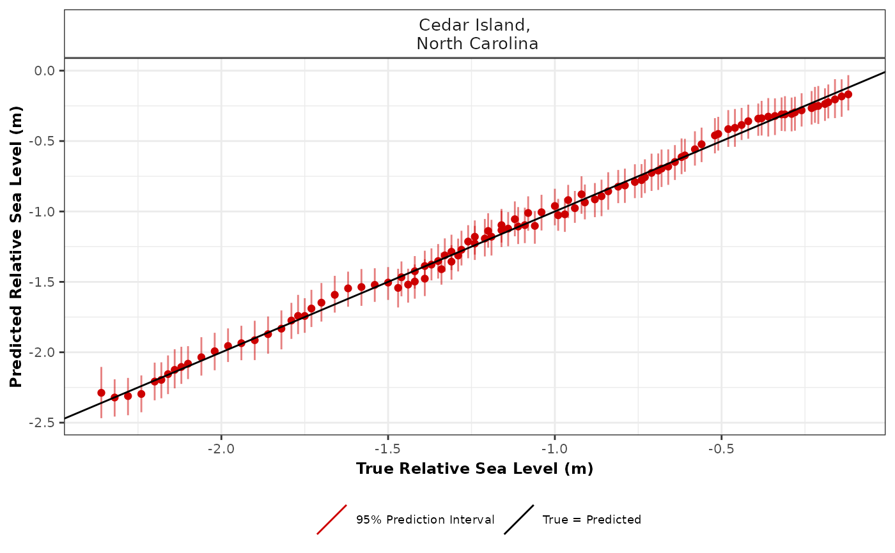

R/cross_val_check.R
cross_val_check.RdCross validation check for spline in time, spline in space time and GAM in order to select the most appropriate number of knots when creating basis functions.
cross_val_check(
data,
prediction_grid_res = 50,
spline_nseg = NULL,
spline_nseg_t = 20,
spline_nseg_st = 6,
n_iterations = 1000,
n_burnin = 100,
n_thin = 5,
n_chains = 2,
model_type,
n_fold = 5,
seed = NULL,
CI = 0.95
)Raw input data
Resolution of grid. Predictions over every 50 years(default) can vary based on user preference, as larger values will reduce computational run time.
This setting is focused on the Noisy Input Spline model. It provides the number of segments used to create basis functions.
This setting is focused on the Noisy Input Generalised Additive Model. It provides the number of segments used to create basis functions.
This setting is focused on the Noisy Input Generalised Additive Model. It provides the number of segments used to create basis functions.
Number of iterations. Increasing this value will increase the computational run time.
Size of burn-in. This number removes a certain number of samples at the beginning.
Amount of thinning.
Number of MCMC chains. The number of times the model will be run.
The user selects their statistical model type. The user can select a Noisy Input Spline in Time using "ni_spline_t". The user can select a Noisy Input Spline in Space Time using "ni_spline_st". The user can select a Noisy Input Generalised Additive Model using "ni_gam_decomp".
Number of folds required in the cross validation. The default is 5 fold cross validation.
If the user wants reproducible results, seed stores the output when random selection was used in the creation of the cross validation.
Size of the credible interval required by the user. The default is 0.95 corresponding to 95%.
A list containing the model comparison measures, e.g. Root Mean Square Error (RMSE), and plot of true vs predicted values
# \donttest{
data <- NAACproxydata %>% dplyr::filter(Site == "Cedar Island")
cross_val_check(data = data, model_type = "ni_spline_t",n_fold = 2)
#> module glm loaded
#> Compiling model graph
#> Resolving undeclared variables
#> Allocating nodes
#> Graph information:
#> Observed stochastic nodes: 52
#> Unobserved stochastic nodes: 15
#> Total graph size: 915
#>
#> Initializing model
#>
#> Compiling model graph
#> Resolving undeclared variables
#> Allocating nodes
#> Graph information:
#> Observed stochastic nodes: 52
#> Unobserved stochastic nodes: 123
#> Total graph size: 5528
#>
#> Initializing model
#>
#> No convergence issues detected.
#> Compiling model graph
#> Resolving undeclared variables
#> Allocating nodes
#> Graph information:
#> Observed stochastic nodes: 52
#> Unobserved stochastic nodes: 15
#> Total graph size: 915
#>
#> Initializing model
#>
#> Compiling model graph
#> Resolving undeclared variables
#> Allocating nodes
#> Graph information:
#> Observed stochastic nodes: 52
#> Unobserved stochastic nodes: 122
#> Total graph size: 5494
#>
#> Initializing model
#>
#> No convergence issues detected.
#> $ME_MAE_RSME_fold_site
#> # A tibble: 2 × 5
#> SiteName CV_fold_number RSME MAE ME
#> <fct> <fct> <dbl> <dbl> <dbl>
#> 1 "Cedar Island,\n North Carolina" 1 0.0690 0.0319 0.00957
#> 2 "Cedar Island,\n North Carolina" 2 0.0704 0.0320 -0.00976
#>
#> $ME_MAE_RSME_site
#> # A tibble: 1 × 4
#> SiteName RSME MAE ME
#> <fct> <dbl> <dbl> <dbl>
#> 1 "Cedar Island,\n North Carolina" 0.000982 0.0320 -0.0000963
#>
#> $ME_MAE_RSME_overall
#> RSME MAE ME
#> 1 0.0009819654 0.03197405 -9.628963e-05
#>
#> $ME_MAE_RSME_fold
#> # A tibble: 2 × 4
#> CV_fold_number RSME MAE ME
#> <fct> <dbl> <dbl> <dbl>
#> 1 1 0.0690 0.0319 0.00957
#> 2 2 0.0704 0.0320 -0.00976
#>
#> $true_pred_plot

#>
#> $CV_model_df
#> Longitude Latitude SiteName data_type_id Age
#> 1 -76.38 34.971 Cedar Island,\n North Carolina ProxyRecord -731
#> 2 -76.38 34.971 Cedar Island,\n North Carolina ProxyRecord -525
#> 3 -76.38 34.971 Cedar Island,\n North Carolina ProxyRecord -333
#> 4 -76.38 34.971 Cedar Island,\n North Carolina ProxyRecord -270
#> 5 -76.38 34.971 Cedar Island,\n North Carolina ProxyRecord -174
#> 6 -76.38 34.971 Cedar Island,\n North Carolina ProxyRecord -143
#> 7 -76.38 34.971 Cedar Island,\n North Carolina ProxyRecord -112
#> 8 -76.38 34.971 Cedar Island,\n North Carolina ProxyRecord -50
#> 9 -76.38 34.971 Cedar Island,\n North Carolina ProxyRecord 15
#> 10 -76.38 34.971 Cedar Island,\n North Carolina ProxyRecord 46
#> 11 -76.38 34.971 Cedar Island,\n North Carolina ProxyRecord 100
#> 12 -76.38 34.971 Cedar Island,\n North Carolina ProxyRecord 153
#> 13 -76.38 34.971 Cedar Island,\n North Carolina ProxyRecord 229
#> 14 -76.38 34.971 Cedar Island,\n North Carolina ProxyRecord 312
#> 15 -76.38 34.971 Cedar Island,\n North Carolina ProxyRecord 434
#> 16 -76.38 34.971 Cedar Island,\n North Carolina ProxyRecord 505
#> 17 -76.38 34.971 Cedar Island,\n North Carolina ProxyRecord 586
#> 18 -76.38 34.971 Cedar Island,\n North Carolina ProxyRecord 625
#> 19 -76.38 34.971 Cedar Island,\n North Carolina ProxyRecord 659
#> 20 -76.38 34.971 Cedar Island,\n North Carolina ProxyRecord 860
#> 21 -76.38 34.971 Cedar Island,\n North Carolina ProxyRecord 883
#> 22 -76.38 34.971 Cedar Island,\n North Carolina ProxyRecord 941
#> 23 -76.38 34.971 Cedar Island,\n North Carolina ProxyRecord 983
#> 24 -76.38 34.971 Cedar Island,\n North Carolina ProxyRecord 1082
#> 25 -76.38 34.971 Cedar Island,\n North Carolina ProxyRecord 1121
#> 26 -76.38 34.971 Cedar Island,\n North Carolina ProxyRecord 1155
#> 27 -76.38 34.971 Cedar Island,\n North Carolina ProxyRecord 1178
#> 28 -76.38 34.971 Cedar Island,\n North Carolina ProxyRecord 1219
#> 29 -76.38 34.971 Cedar Island,\n North Carolina ProxyRecord 1267
#> 30 -76.38 34.971 Cedar Island,\n North Carolina ProxyRecord 1340
#> 31 -76.38 34.971 Cedar Island,\n North Carolina ProxyRecord 1389
#> 32 -76.38 34.971 Cedar Island,\n North Carolina ProxyRecord 1408
#> 33 -76.38 34.971 Cedar Island,\n North Carolina ProxyRecord 1436
#> 34 -76.38 34.971 Cedar Island,\n North Carolina ProxyRecord 1460
#> 35 -76.38 34.971 Cedar Island,\n North Carolina ProxyRecord 1543
#> 36 -76.38 34.971 Cedar Island,\n North Carolina ProxyRecord 1570
#> 37 -76.38 34.971 Cedar Island,\n North Carolina ProxyRecord 1590
#> 38 -76.38 34.971 Cedar Island,\n North Carolina ProxyRecord 1644
#> 39 -76.38 34.971 Cedar Island,\n North Carolina ProxyRecord 1653
#> 40 -76.38 34.971 Cedar Island,\n North Carolina ProxyRecord 1669
#> 41 -76.38 34.971 Cedar Island,\n North Carolina ProxyRecord 1736
#> 42 -76.38 34.971 Cedar Island,\n North Carolina ProxyRecord 1768
#> 43 -76.38 34.971 Cedar Island,\n North Carolina ProxyRecord 1790
#> 44 -76.38 34.971 Cedar Island,\n North Carolina ProxyRecord 1864
#> 45 -76.38 34.971 Cedar Island,\n North Carolina ProxyRecord 1918
#> 46 -76.38 34.971 Cedar Island,\n North Carolina ProxyRecord 1927
#> 47 -76.38 34.971 Cedar Island,\n North Carolina ProxyRecord 1930
#> 48 -76.38 34.971 Cedar Island,\n North Carolina ProxyRecord 1957
#> 49 -76.38 34.971 Cedar Island,\n North Carolina ProxyRecord 1974
#> 50 -76.38 34.971 Cedar Island,\n North Carolina ProxyRecord 1979
#> 51 -76.38 34.971 Cedar Island,\n North Carolina ProxyRecord 1988
#> 52 -76.38 34.971 Cedar Island,\n North Carolina ProxyRecord 2005
#> 53 -76.38 34.971 Cedar Island,\n North Carolina ProxyRecord -800
#> 54 -76.38 34.971 Cedar Island,\n North Carolina ProxyRecord -661
#> 55 -76.38 34.971 Cedar Island,\n North Carolina ProxyRecord -211
#> 56 -76.38 34.971 Cedar Island,\n North Carolina ProxyRecord 73
#> 57 -76.38 34.971 Cedar Island,\n North Carolina ProxyRecord 278
#> 58 -76.38 34.971 Cedar Island,\n North Carolina ProxyRecord 346
#> 59 -76.38 34.971 Cedar Island,\n North Carolina ProxyRecord 381
#> 60 -76.38 34.971 Cedar Island,\n North Carolina ProxyRecord 568
#> 61 -76.38 34.971 Cedar Island,\n North Carolina ProxyRecord 572
#> 62 -76.38 34.971 Cedar Island,\n North Carolina ProxyRecord 604
#> 63 -76.38 34.971 Cedar Island,\n North Carolina ProxyRecord 605
#> 64 -76.38 34.971 Cedar Island,\n North Carolina ProxyRecord 623
#> 65 -76.38 34.971 Cedar Island,\n North Carolina ProxyRecord 672
#> 66 -76.38 34.971 Cedar Island,\n North Carolina ProxyRecord 725
#> 67 -76.38 34.971 Cedar Island,\n North Carolina ProxyRecord 745
#> 68 -76.38 34.971 Cedar Island,\n North Carolina ProxyRecord 763
#> 69 -76.38 34.971 Cedar Island,\n North Carolina ProxyRecord 789
#> 70 -76.38 34.971 Cedar Island,\n North Carolina ProxyRecord 818
#> 71 -76.38 34.971 Cedar Island,\n North Carolina ProxyRecord 825
#> 72 -76.38 34.971 Cedar Island,\n North Carolina ProxyRecord 895
#> 73 -76.38 34.971 Cedar Island,\n North Carolina ProxyRecord 1002
#> 74 -76.38 34.971 Cedar Island,\n North Carolina ProxyRecord 1038
#> 75 -76.38 34.971 Cedar Island,\n North Carolina ProxyRecord 1057
#> 76 -76.38 34.971 Cedar Island,\n North Carolina ProxyRecord 1068
#> 77 -76.38 34.971 Cedar Island,\n North Carolina ProxyRecord 1093
#> 78 -76.38 34.971 Cedar Island,\n North Carolina ProxyRecord 1146
#> 79 -76.38 34.971 Cedar Island,\n North Carolina ProxyRecord 1159
#> 80 -76.38 34.971 Cedar Island,\n North Carolina ProxyRecord 1287
#> 81 -76.38 34.971 Cedar Island,\n North Carolina ProxyRecord 1295
#> 82 -76.38 34.971 Cedar Island,\n North Carolina ProxyRecord 1322
#> 83 -76.38 34.971 Cedar Island,\n North Carolina ProxyRecord 1354
#> 84 -76.38 34.971 Cedar Island,\n North Carolina ProxyRecord 1468
#> 85 -76.38 34.971 Cedar Island,\n North Carolina ProxyRecord 1490
#> 86 -76.38 34.971 Cedar Island,\n North Carolina ProxyRecord 1525
#> 87 -76.38 34.971 Cedar Island,\n North Carolina ProxyRecord 1603
#> 88 -76.38 34.971 Cedar Island,\n North Carolina ProxyRecord 1626
#> 89 -76.38 34.971 Cedar Island,\n North Carolina ProxyRecord 1697
#> 90 -76.38 34.971 Cedar Island,\n North Carolina ProxyRecord 1725
#> 91 -76.38 34.971 Cedar Island,\n North Carolina ProxyRecord 1840
#> 92 -76.38 34.971 Cedar Island,\n North Carolina ProxyRecord 1846
#> 93 -76.38 34.971 Cedar Island,\n North Carolina ProxyRecord 1874
#> 94 -76.38 34.971 Cedar Island,\n North Carolina ProxyRecord 1885
#> 95 -76.38 34.971 Cedar Island,\n North Carolina ProxyRecord 1898
#> 96 -76.38 34.971 Cedar Island,\n North Carolina ProxyRecord 1910
#> 97 -76.38 34.971 Cedar Island,\n North Carolina ProxyRecord 1913
#> 98 -76.38 34.971 Cedar Island,\n North Carolina ProxyRecord 1923
#> 99 -76.38 34.971 Cedar Island,\n North Carolina ProxyRecord 1934
#> 100 -76.38 34.971 Cedar Island,\n North Carolina ProxyRecord 1937
#> 101 -76.38 34.971 Cedar Island,\n North Carolina ProxyRecord 1941
#> 102 -76.38 34.971 Cedar Island,\n North Carolina ProxyRecord 1951
#> 103 -76.38 34.971 Cedar Island,\n North Carolina ProxyRecord 1963
#> 104 -76.38 34.971 Cedar Island,\n North Carolina ProxyRecord 1996
#> true_RSL Age_err RSL_err CV_fold test_set NI_var_grid_term pred_RSL
#> 1 -2.32 36.25 0.06 1 test_set 0.0001659608 -2.3270041
#> 2 -2.24 65.00 0.06 1 test_set 0.0006794856 -2.3007055
#> 3 -2.20 35.00 0.06 1 test_set 0.0010525454 -2.2218023
#> 4 -2.18 26.25 0.06 1 test_set 0.0011527626 -2.1868775
#> 5 -2.14 46.00 0.06 1 test_set 0.0012843880 -2.1268112
#> 6 -2.12 44.00 0.06 1 test_set 0.0013214533 -2.1058911
#> 7 -2.10 42.50 0.06 1 test_set 0.0013558634 -2.0843254
#> 8 -2.06 41.00 0.06 1 test_set 0.0014167181 -2.0394895
#> 9 -2.02 27.50 0.06 1 test_set 0.0014691135 -1.9904663
#> 10 -1.98 33.00 0.06 1 test_set 0.0014899909 -1.9665109
#> 11 -1.90 37.25 0.06 1 test_set 0.0015200170 -1.9241185
#> 12 -1.86 55.50 0.06 1 test_set 0.0015419884 -1.8819426
#> 13 -1.82 74.50 0.06 1 test_set 0.0015662923 -1.8208640
#> 14 -1.77 79.75 0.06 1 test_set 0.0015846436 -1.7536383
#> 15 -1.70 75.25 0.06 1 test_set 0.0015960945 -1.6545185
#> 16 -1.66 64.75 0.06 1 test_set 0.0015942534 -1.5970333
#> 17 -1.58 26.25 0.06 1 test_set 0.0015845112 -1.5319583
#> 18 -1.42 62.25 0.06 1 test_set 0.0015769157 -1.5009053
#> 19 -1.39 60.25 0.06 1 test_set 0.0015687534 -1.4740186
#> 20 -1.33 44.75 0.06 1 test_set 0.0014911824 -1.3198529
#> 21 -1.29 65.75 0.06 1 test_set 0.0014791083 -1.3028626
#> 22 -1.28 51.50 0.06 1 test_set 0.0014457448 -1.2607394
#> 23 -1.26 62.25 0.06 1 test_set 0.0014189781 -1.2309320
#> 24 -1.20 40.25 0.06 1 test_set 0.0013486501 -1.1632482
#> 25 -1.14 38.75 0.06 1 test_set 0.0013299415 -1.1375402
#> 26 -1.16 43.75 0.06 1 test_set 0.0013230369 -1.1153601
#> 27 -1.06 36.00 0.06 1 test_set 0.0013233342 -1.1003956
#> 28 -1.12 39.50 0.06 1 test_set 0.0013338077 -1.0736293
#> 29 -0.99 44.25 0.06 1 test_set 0.0013622580 -1.0418305
#> 30 -0.94 39.75 0.06 1 test_set 0.0014389988 -0.9915699
#> 31 -0.91 31.00 0.06 1 test_set 0.0015131633 -0.9558772
#> 32 -0.96 85.75 0.06 1 test_set 0.0015468170 -0.9414943
#> 33 -0.88 30.50 0.06 1 test_set 0.0016013988 -0.9196621
#> 34 -0.86 27.25 0.06 1 test_set 0.0016529126 -0.9002870
#> 35 -0.79 25.25 0.06 1 test_set 0.0018647186 -0.8277810
#> 36 -0.76 24.25 0.06 1 test_set 0.0019448741 -0.8020929
#> 37 -0.74 23.25 0.06 1 test_set 0.0020078107 -0.7823188
#> 38 -0.69 29.00 0.06 1 test_set 0.0021928823 -0.7254920
#> 39 -0.68 29.50 0.06 1 test_set 0.0022258762 -0.7155023
#> 40 -0.66 30.50 0.06 1 test_set 0.0022860478 -0.6973559
#> 41 -0.61 23.75 0.06 1 test_set 0.0025590898 -0.6156539
#> 42 -0.58 19.50 0.06 1 test_set 0.0027015030 -0.5731366
#> 43 -0.56 16.50 0.06 1 test_set 0.0028039139 -0.5425003
#> 44 -0.48 14.00 0.06 1 test_set 0.0031753078 -0.4304465
#> 45 -0.36 7.00 0.06 1 test_set 0.0034725178 -0.3392324
#> 46 -0.32 8.00 0.06 1 test_set 0.0035242014 -0.3232041
#> 47 -0.31 8.25 0.06 1 test_set 0.0035415657 -0.3178073
#> 48 -0.22 7.00 0.06 1 test_set 0.0037009140 -0.2680000
#> 49 -0.19 5.50 0.06 1 test_set 0.0038040788 -0.2354751
#> 50 -0.18 5.75 0.06 1 test_set 0.0038348383 -0.2257342
#> 51 -0.16 5.00 0.06 1 test_set 0.0038906828 -0.2079976
#> 52 -0.12 2.25 0.06 1 test_set 0.0039969473 -0.1737765
#> 53 -2.36 65.25 0.06 2 test_set 0.0004026078 -2.2766112
#> 54 -2.28 47.75 0.06 2 test_set 0.0001247759 -2.2971952
#> 55 -2.16 40.25 0.06 2 test_set 0.0013594269 -2.1499689
#> 56 -1.94 35.50 0.06 2 test_set 0.0017101636 -1.9508944
#> 57 -1.79 78.50 0.06 2 test_set 0.0017732153 -1.7882325
#> 58 -1.75 79.50 0.06 2 test_set 0.0017808447 -1.7334632
#> 59 -1.73 78.50 0.06 2 test_set 0.0017834633 -1.7052140
#> 60 -1.62 32.25 0.06 2 test_set 0.0017823886 -1.5544299
#> 61 -1.47 61.00 0.06 2 test_set 0.0017820883 -1.5512192
#> 62 -1.54 18.50 0.06 2 test_set 0.0017792683 -1.5255731
#> 63 -1.44 62.25 0.06 2 test_set 0.0017791682 -1.5247729
#> 64 -1.50 15.25 0.06 2 test_set 0.0017772423 -1.5103828
#> 65 -1.46 36.75 0.06 2 test_set 0.0017708080 -1.4713584
#> 66 -1.42 41.25 0.06 2 test_set 0.0017618866 -1.4294373
#> 67 -1.34 60.75 0.06 2 test_set 0.0017579902 -1.4137084
#> 68 -1.39 43.75 0.06 2 test_set 0.0017542352 -1.3995990
#> 69 -1.37 44.75 0.06 2 test_set 0.0017483962 -1.3793018
#> 70 -1.35 45.00 0.06 2 test_set 0.0017413046 -1.3567863
#> 71 -1.31 65.50 0.06 2 test_set 0.0017395014 -1.3513721
#> 72 -1.31 49.00 0.06 2 test_set 0.0017195132 -1.2977111
#> 73 -1.24 50.50 0.06 2 test_set 0.0016820868 -1.2176147
#> 74 -1.24 61.00 0.06 2 test_set 0.0016676265 -1.1912661
#> 75 -1.21 56.75 0.06 2 test_set 0.0016596154 -1.1774933
#> 76 -1.19 53.75 0.06 2 test_set 0.0016548577 -1.1695631
#> 77 -1.16 45.50 0.06 2 test_set 0.0016437180 -1.1516625
#> 78 -1.11 36.50 0.06 2 test_set 0.0016298428 -1.1141995
#> 79 -1.09 36.50 0.06 2 test_set 0.0016295616 -1.1050685
#> 80 -1.08 19.75 0.06 2 test_set 0.0016924682 -1.0142488
#> 81 -0.97 42.00 0.06 2 test_set 0.0017003590 -1.0084186
#> 82 -1.04 17.75 0.06 2 test_set 0.0017304292 -0.9885141
#> 83 -1.00 20.25 0.06 2 test_set 0.0017729382 -0.9643916
#> 84 -0.92 120.50 0.06 2 test_set 0.0019849426 -0.8720104
#> 85 -0.84 25.50 0.06 2 test_set 0.0020367433 -0.8527174
#> 86 -0.81 26.00 0.06 2 test_set 0.0021264132 -0.8208392
#> 87 -0.73 23.50 0.06 2 test_set 0.0023583223 -0.7438362
#> 88 -0.71 26.00 0.06 2 test_set 0.0024351590 -0.7193668
#> 89 -0.64 26.25 0.06 2 test_set 0.0026966364 -0.6380642
#> 90 -0.62 24.75 0.06 2 test_set 0.0028098413 -0.6034000
#> 91 -0.52 14.00 0.06 2 test_set 0.0033346319 -0.4434518
#> 92 -0.51 14.75 0.06 2 test_set 0.0033646542 -0.4342648
#> 93 -0.46 12.75 0.06 2 test_set 0.0035082221 -0.3902013
#> 94 -0.44 10.25 0.06 2 test_set 0.0035661849 -0.3723424
#> 95 -0.42 6.75 0.06 2 test_set 0.0036358218 -0.3508277
#> 96 -0.39 5.25 0.06 2 test_set 0.0037011936 -0.3305686
#> 97 -0.38 5.75 0.06 2 test_set 0.0037177003 -0.3254431
#> 98 -0.34 7.50 0.06 2 test_set 0.0037731957 -0.3081809
#> 99 -0.29 8.00 0.06 2 test_set 0.0038350812 -0.2888740
#> 100 -0.28 8.00 0.06 2 test_set 0.0038521120 -0.2835499
#> 101 -0.26 7.75 0.06 2 test_set 0.0038749215 -0.2764119
#> 102 -0.23 7.75 0.06 2 test_set 0.0039324547 -0.2583688
#> 103 -0.21 5.50 0.06 2 test_set 0.0040024552 -0.2363394
#> 104 -0.14 2.00 0.06 2 test_set 0.0042003604 -0.1735847
#> upr lwr y_post_pred upr_PI lwr_PI CI CV_fold_number
#> 1 -2.4091982 -2.2532977 -2.3299800 -2.4686726 -2.18057495 95% 1
#> 2 -2.3929034 -2.2059249 -2.3001356 -2.4470358 -2.13917657 95% 1
#> 3 -2.3271422 -2.1233670 -2.2166652 -2.3672730 -2.06908387 95% 1
#> 4 -2.2854930 -2.0987127 -2.1869914 -2.3206650 -2.05291221 95% 1
#> 5 -2.2149526 -2.0510372 -2.1231705 -2.2766341 -1.97787717 95% 1
#> 6 -2.1880747 -2.0351164 -2.1030054 -2.2416594 -1.95248447 95% 1
#> 7 -2.1600914 -2.0170030 -2.0819779 -2.2237240 -1.93323640 95% 1
#> 8 -2.1071300 -1.9767306 -2.0379443 -2.1779194 -1.89846445 95% 1
#> 9 -2.0488876 -1.9355902 -1.9937455 -2.1172719 -1.86089292 95% 1
#> 10 -2.0217706 -1.9162677 -1.9645316 -2.1085808 -1.84030974 95% 1
#> 11 -1.9748939 -1.8764594 -1.9176813 -2.0463647 -1.79702638 95% 1
#> 12 -1.9339729 -1.8335540 -1.8837585 -2.0245193 -1.75099304 95% 1
#> 13 -1.8702485 -1.7702127 -1.8239710 -1.9440567 -1.68523267 95% 1
#> 14 -1.8018581 -1.7062752 -1.7572093 -1.8763306 -1.64303783 95% 1
#> 15 -1.6931731 -1.6130377 -1.6508465 -1.7664675 -1.52053755 95% 1
#> 16 -1.6311380 -1.5600749 -1.5961258 -1.7123046 -1.46117524 95% 1
#> 17 -1.5599960 -1.4987070 -1.5327574 -1.6628248 -1.41320968 95% 1
#> 18 -1.5288596 -1.4686858 -1.5018060 -1.6224867 -1.37492563 95% 1
#> 19 -1.5005655 -1.4446580 -1.4706800 -1.6022000 -1.34034919 95% 1
#> 20 -1.3458725 -1.2919216 -1.3225021 -1.4559072 -1.18875977 95% 1
#> 21 -1.3293345 -1.2742915 -1.2996802 -1.4159118 -1.17849346 95% 1
#> 22 -1.2890151 -1.2312392 -1.2630863 -1.3936820 -1.15041711 95% 1
#> 23 -1.2628255 -1.2020846 -1.2284623 -1.3587626 -1.11150117 95% 1
#> 24 -1.1974381 -1.1341592 -1.1639523 -1.2862929 -1.05202949 95% 1
#> 25 -1.1716792 -1.1085393 -1.1395437 -1.2685004 -1.01605688 95% 1
#> 26 -1.1492043 -1.0874301 -1.1173522 -1.2230926 -0.99981572 95% 1
#> 27 -1.1350490 -1.0727923 -1.1014501 -1.2197603 -0.98149441 95% 1
#> 28 -1.1074845 -1.0454331 -1.0727565 -1.1992140 -0.94719257 95% 1
#> 29 -1.0752877 -1.0129033 -1.0414855 -1.1717784 -0.91880605 95% 1
#> 30 -1.0276001 -0.9595670 -0.9936347 -1.1106748 -0.86428965 95% 1
#> 31 -0.9948936 -0.9216412 -0.9577140 -1.0825448 -0.83314595 95% 1
#> 32 -0.9821392 -0.9066123 -0.9432836 -1.0687907 -0.82822167 95% 1
#> 33 -0.9605493 -0.8841428 -0.9210737 -1.0442174 -0.80593507 95% 1
#> 34 -0.9410688 -0.8634916 -0.9006926 -1.0321668 -0.77620090 95% 1
#> 35 -0.8688524 -0.7885379 -0.8281921 -0.9496822 -0.70365130 95% 1
#> 36 -0.8421383 -0.7616365 -0.8027926 -0.9385487 -0.68319043 95% 1
#> 37 -0.8214461 -0.7412029 -0.7846572 -0.9025530 -0.66546191 95% 1
#> 38 -0.7632433 -0.6831827 -0.7206194 -0.8476874 -0.59897471 95% 1
#> 39 -0.7528611 -0.6735145 -0.7157190 -0.8235222 -0.59955059 95% 1
#> 40 -0.7345626 -0.6552326 -0.6962912 -0.8193477 -0.57634529 95% 1
#> 41 -0.6490707 -0.5779372 -0.6163567 -0.7359669 -0.49486891 95% 1
#> 42 -0.6045441 -0.5377725 -0.5731421 -0.6919456 -0.45561298 95% 1
#> 43 -0.5718787 -0.5078467 -0.5401290 -0.6610180 -0.41035472 95% 1
#> 44 -0.4583639 -0.3995057 -0.4313260 -0.5404169 -0.31742674 95% 1
#> 45 -0.3717361 -0.3075280 -0.3400717 -0.4645683 -0.21053113 95% 1
#> 46 -0.3560780 -0.2914525 -0.3238738 -0.4483864 -0.19476120 95% 1
#> 47 -0.3508146 -0.2854001 -0.3166844 -0.4530897 -0.19786053 95% 1
#> 48 -0.3084169 -0.2297345 -0.2637547 -0.3769033 -0.13559593 95% 1
#> 49 -0.2801705 -0.1913349 -0.2347723 -0.3581278 -0.10282376 95% 1
#> 50 -0.2726186 -0.1806498 -0.2258270 -0.3524516 -0.10669336 95% 1
#> 51 -0.2589225 -0.1599066 -0.2103795 -0.3322063 -0.08458437 95% 1
#> 52 -0.2319919 -0.1198883 -0.1755780 -0.2968020 -0.03151138 95% 1
#> 53 -2.4196664 -2.1373291 -2.2798747 -2.4987233 -2.06670962 95% 2
#> 54 -2.3806258 -2.2224250 -2.2995479 -2.4404281 -2.15110431 95% 2
#> 55 -2.1911159 -2.1063666 -2.1476392 -2.2652923 -2.02787641 95% 2
#> 56 -1.9855322 -1.9143392 -1.9494293 -2.0640921 -1.83572066 95% 2
#> 57 -1.8285128 -1.7433706 -1.7859533 -1.9040986 -1.67353406 95% 2
#> 58 -1.7740567 -1.6873059 -1.7313650 -1.8630450 -1.60803396 95% 2
#> 59 -1.7452755 -1.6617634 -1.7035118 -1.8189016 -1.60589453 95% 2
#> 60 -1.5923681 -1.5168909 -1.5575396 -1.6849226 -1.42613493 95% 2
#> 61 -1.5890807 -1.5138618 -1.5544167 -1.6731688 -1.42565723 95% 2
#> 62 -1.5626940 -1.4897419 -1.5243995 -1.6408460 -1.38891604 95% 2
#> 63 -1.5618670 -1.4889914 -1.5237947 -1.6581099 -1.38749593 95% 2
#> 64 -1.5469596 -1.4755164 -1.5088373 -1.6435415 -1.39241308 95% 2
#> 65 -1.5062165 -1.4388965 -1.4669178 -1.5902440 -1.34606072 95% 2
#> 66 -1.4621760 -1.3985449 -1.4209193 -1.5391263 -1.30879283 95% 2
#> 67 -1.4474878 -1.3817360 -1.4111244 -1.5317087 -1.28736533 95% 2
#> 68 -1.4341820 -1.3667050 -1.3974027 -1.5271356 -1.26939376 95% 2
#> 69 -1.4132574 -1.3463812 -1.3800830 -1.5081650 -1.26230639 95% 2
#> 70 -1.3909484 -1.3228155 -1.3573791 -1.4770703 -1.24707360 95% 2
#> 71 -1.3858220 -1.3172495 -1.3523218 -1.4716433 -1.24526474 95% 2
#> 72 -1.3343193 -1.2645538 -1.2987822 -1.4339039 -1.17698694 95% 2
#> 73 -1.2537161 -1.1819557 -1.2156140 -1.3329087 -1.10286191 95% 2
#> 74 -1.2265496 -1.1555605 -1.1898643 -1.3161061 -1.07402111 95% 2
#> 75 -1.2117638 -1.1425668 -1.1734698 -1.2926190 -1.05058104 95% 2
#> 76 -1.2031692 -1.1347249 -1.1764584 -1.2958129 -1.04200268 95% 2
#> 77 -1.1854814 -1.1165978 -1.1524105 -1.2677210 -1.01824780 95% 2
#> 78 -1.1457530 -1.0790058 -1.1175289 -1.2482337 -0.98396762 95% 2
#> 79 -1.1368016 -1.0699881 -1.1080106 -1.2199540 -0.97814651 95% 2
#> 80 -1.0428814 -0.9818885 -1.0204418 -1.1564944 -0.90402636 95% 2
#> 81 -1.0370664 -0.9757610 -1.0103688 -1.1303631 -0.88397920 95% 2
#> 82 -1.0178537 -0.9561893 -0.9911192 -1.1189279 -0.86140141 95% 2
#> 83 -0.9936675 -0.9318595 -0.9642646 -1.0955144 -0.82572966 95% 2
#> 84 -0.9033033 -0.8407381 -0.8775043 -1.0111815 -0.76172778 95% 2
#> 85 -0.8848889 -0.8212096 -0.8565089 -0.9741244 -0.73475569 95% 2
#> 86 -0.8541558 -0.7879690 -0.8237080 -0.9661177 -0.69728462 95% 2
#> 87 -0.7783103 -0.7100966 -0.7422053 -0.8739155 -0.61423672 95% 2
#> 88 -0.7531574 -0.6856819 -0.7181276 -0.8433172 -0.59314306 95% 2
#> 89 -0.6725138 -0.6036893 -0.6426284 -0.7719258 -0.50793480 95% 2
#> 90 -0.6380466 -0.5693723 -0.6022947 -0.7362536 -0.49380105 95% 2
#> 91 -0.4741753 -0.4120225 -0.4411430 -0.5581654 -0.32772820 95% 2
#> 92 -0.4652953 -0.4029558 -0.4294991 -0.5422542 -0.29829128 95% 2
#> 93 -0.4227335 -0.3574321 -0.3893736 -0.5095128 -0.25791973 95% 2
#> 94 -0.4055212 -0.3392575 -0.3737627 -0.5078949 -0.23663357 95% 2
#> 95 -0.3845675 -0.3171148 -0.3504969 -0.4832668 -0.23097973 95% 2
#> 96 -0.3647985 -0.2963944 -0.3342811 -0.4568772 -0.20242625 95% 2
#> 97 -0.3597821 -0.2911414 -0.3259456 -0.4561744 -0.20330968 95% 2
#> 98 -0.3431271 -0.2734536 -0.3054842 -0.4365877 -0.17659983 95% 2
#> 99 -0.3243366 -0.2526455 -0.2868460 -0.4055791 -0.15954649 95% 2
#> 100 -0.3191486 -0.2466653 -0.2855000 -0.4035361 -0.16744491 95% 2
#> 101 -0.3125459 -0.2386449 -0.2737503 -0.3967714 -0.16514743 95% 2
#> 102 -0.2952970 -0.2183259 -0.2580512 -0.3848525 -0.13670909 95% 2
#> 103 -0.2759427 -0.1939686 -0.2374651 -0.3619691 -0.10724552 95% 2
#> 104 -0.2211565 -0.1220820 -0.1708131 -0.3027077 -0.03435983 95% 2
#> obs_in_PI
#> 1 TRUE
#> 2 TRUE
#> 3 TRUE
#> 4 TRUE
#> 5 TRUE
#> 6 TRUE
#> 7 TRUE
#> 8 TRUE
#> 9 TRUE
#> 10 TRUE
#> 11 TRUE
#> 12 TRUE
#> 13 TRUE
#> 14 TRUE
#> 15 TRUE
#> 16 TRUE
#> 17 TRUE
#> 18 TRUE
#> 19 TRUE
#> 20 TRUE
#> 21 TRUE
#> 22 TRUE
#> 23 TRUE
#> 24 TRUE
#> 25 TRUE
#> 26 TRUE
#> 27 TRUE
#> 28 TRUE
#> 29 TRUE
#> 30 TRUE
#> 31 TRUE
#> 32 TRUE
#> 33 TRUE
#> 34 TRUE
#> 35 TRUE
#> 36 TRUE
#> 37 TRUE
#> 38 TRUE
#> 39 TRUE
#> 40 TRUE
#> 41 TRUE
#> 42 TRUE
#> 43 TRUE
#> 44 TRUE
#> 45 TRUE
#> 46 TRUE
#> 47 TRUE
#> 48 TRUE
#> 49 TRUE
#> 50 TRUE
#> 51 TRUE
#> 52 TRUE
#> 53 TRUE
#> 54 TRUE
#> 55 TRUE
#> 56 TRUE
#> 57 TRUE
#> 58 TRUE
#> 59 TRUE
#> 60 TRUE
#> 61 TRUE
#> 62 TRUE
#> 63 TRUE
#> 64 TRUE
#> 65 TRUE
#> 66 TRUE
#> 67 TRUE
#> 68 TRUE
#> 69 TRUE
#> 70 TRUE
#> 71 TRUE
#> 72 TRUE
#> 73 TRUE
#> 74 TRUE
#> 75 TRUE
#> 76 TRUE
#> 77 TRUE
#> 78 TRUE
#> 79 TRUE
#> 80 TRUE
#> 81 TRUE
#> 82 TRUE
#> 83 TRUE
#> 84 TRUE
#> 85 TRUE
#> 86 TRUE
#> 87 TRUE
#> 88 TRUE
#> 89 TRUE
#> 90 TRUE
#> 91 TRUE
#> 92 TRUE
#> 93 TRUE
#> 94 TRUE
#> 95 TRUE
#> 96 TRUE
#> 97 TRUE
#> 98 TRUE
#> 99 TRUE
#> 100 TRUE
#> 101 TRUE
#> 102 TRUE
#> 103 TRUE
#> 104 TRUE
#>
#> $total_coverage
#> [1] 1
#>
#> $prediction_interval_size
#> # A tibble: 1 × 2
#> SiteName PI_width
#> <fct> <dbl>
#> 1 "Cedar Island,\n North Carolina" -0.253
#>
#> $coverage_by_site
#> # A tibble: 1 × 2
#> SiteName coverage_by_site
#> <fct> <dbl>
#> 1 "Cedar Island,\n North Carolina" 1
#>
# }